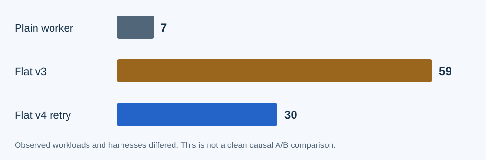

Useful behavior. Real remaining overhead.
The bounded trials exercised the method. They did not establish universal host behavior or a cheaper way to do every task.

| Observed slide phase | Actors | Calls | Recorded aggregate tokens |
|---|---|---|---|
| Plain worker | 1 | 7 | 270,599 |
| Flat v3 | 2 | 59 | 2,475,895 |
| Flat v4 retry | 2 | 30 | 1,242,879 |
Token totals include cached input. The v3 slide total excludes later mature-project and overlap work. V4 changed two instruction files, exact-path handoffs and the harness together; it is not a clean causal A/B comparison. Dollar cost is unknown. Efficiency over plain execution was not demonstrated.
What the tests observed
- 84 development tests passed: 20 starter and 64 legacy tests. The v4 instruction-only retry reused unchanged helper/API/installer evidence.
- Nine fresh explicitly assigned subjects returned and were evaluated. Corrected six-slide artifacts passed independent rendering, navigation and content checks.
- An active owner initiated a due bounded review, accepted scoped knowledge and a later fresh worker applied customer knowledge without leaking it into training output.
- A mature fixture loaded project-owned roles/header and retained a separate independent tester.
- A controlled probe completed foreground work while a reviewer remained unfinished. The artificial hold did not prove simultaneous inference or a natural response-time guarantee.
What remains unproved
Native unassigned cold startup, broad reliability, offline review and comprehensive cross-batch trend detection remain unproved. Missing-path startup attempts were retained. An incorrect timestamp was explicitly corrected with history; original misses were not erased.
Public source: Flat starter walkthrough and validation notes.